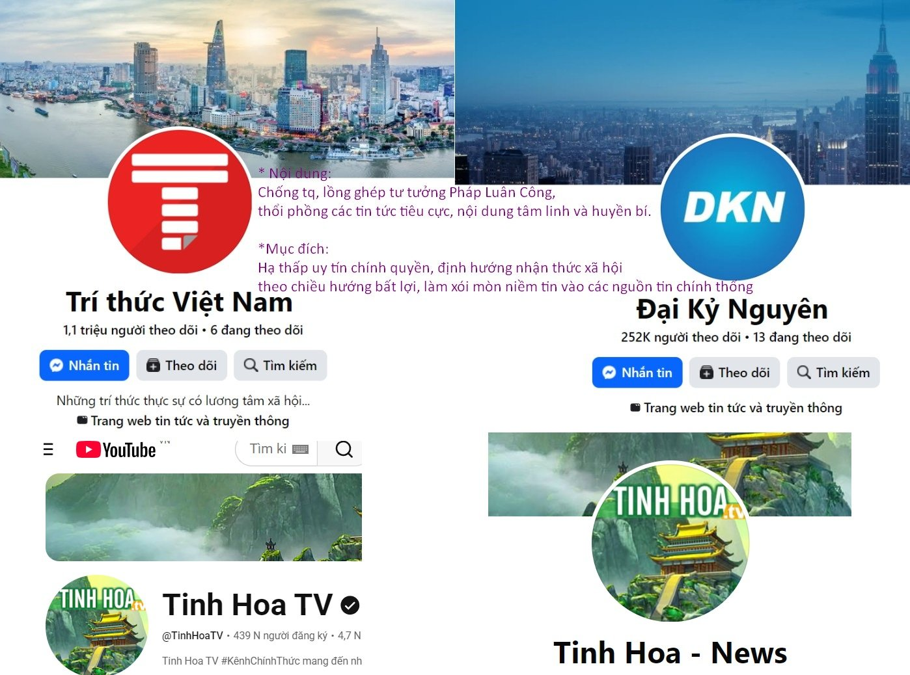

Ngoại ban, ly gián và phản động

Tổng hợp các trang ngoại ban đang âm thầm chống phá, ly gián, làm ngu dân Việt.
| Phân loại | Tên | Nguồn gốc | Nội dung thường thấy | Mục đích | Link |
|---|---|---|---|---|---|
| Ngoại ban | Đại Kỷ Nguyên | Epoch Times | phóng đại các hiện tượng thiên tai, tâm linh kỳ bí, lồng ghép nội dung ca ngợi tín ngưỡng và bôi nhọ chính quyền các nước. | thu hút tương tác bằng tin tức giật gân, làm giảm khả năng tư duy phản biện và làm lệch lạc nhận thức khoa học của người đọc. | https://facebook.com/dknnews |
| Ngoại ban | Trí thức Việt Nam | Vision times | chống cộng, lồng ghép tư tưởng pháp luân công, thổi phồng tin tức tiêu cực, tâm linh huyền bí | hạ thấp uy tín chính quyền, định hướng sai lệch nhận thức xã hội, làm xói mòn niềm tin tin tức chính thống | https://facebook.com/TriThucVietNamForum |
| Ngoại ban | Tinh Hoa TV | Kênh vệ tinh | chuyện đạo lý cổ xưa, tiên tri, UFO, kết hợp xen kẽ các bài viết mập mờ, bóp méo thông tin chính trị hiện tại. | tiếp cận nhóm thích đọc chuyện nhân văn, tâm linh để từ từ "mưa dầm thấm lâu", cài cắm các tư tưởng chống phá, ngu dân | https://www.youtube.com/@TinhHoaTV |
| Ngoại ban | Tinh Hoa News | Kênh vệ tinh | văn hóa, lịch sử và tâm linh thuộc cùng hệ sinh thái | tri thức độn, làm ngu dân, từ đó định hướng tư tưởng | https://facebook.com/tinhhoatv.official |
có liên quan pháp luân công
│
┌──────────────┴──────────────┐
│ │
▼ ▼
epoch media group vision times group
│ │
┌─────┴─────┐ ┌────────┼─────────┐
│ │ │ │ │
▼ ▼ ▼ ▼ ▼
epoch tv đại kỷ nguyên trí thức tinh hoa tinh hoa
/ video (dkn news) vn news tv